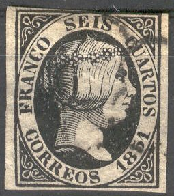
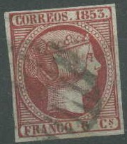
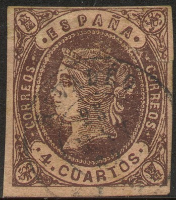
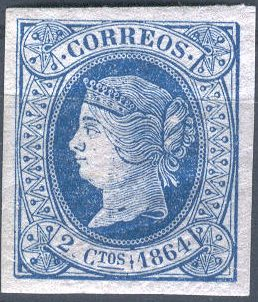

España - Espagne - Spanien - Spanje
Return To Catalogue - Queen Isabella 1850-1853 - 1853 Madrid local issue - 1854 arms issue- 1855 Queen Isabella issue - Queen Isabella 1860-1864 - Queen Isabella 1865 iissue - Queen Isabella 1866-1868 - 1868 'Habilitado' overprints - 1879 King Alfonso XII - Inscription 'Comunicaciones' 1870-1872 - 'Comunicaciones' 1873 - 'Comunicaciones' 1874-1889 - 1900-1929 issues - 1930 onwards- Civil War issues - Official stamps - War tax, Barcelona, Franchise, Postal Stationery - Carlist post - Fiscal Stamps, part 1 - Fiscal Stamps, part 2 and miscellaneous - Telegraph stamps - Cancels on first issues - Melilla (Morocco) bogus issues
Cabo Juby - Cuba - Fernando Poo - Mariana Islands - Philippines - Porto Rico - Spanish Guinea - Spanish Morocco - Spanish Sahara (Ifni) - Spanish Westindies
Note: on my website many of the
pictures can not be seen! They are of course present in the
catalogue;
contact me if you want to purchase it.
Many of the remainders of the early stamps of Spain (1854-1870) were sold to dealers after they were cancelled with three thick horizontal bars. They are of lesser value than genuine used stamps.

Spain 1850 Queen Isabella
forgeries
Spain 1851 Queen Isabella forgeries
Spain 1852 Queen Isabella forgeries
Spain 1853 Queen Isabella forgeries


Spain 1855 Queen Isabella forgeries




5 Mils green 10 Mils brown 2 c grey (1872) 5 c green (1872)
Value of the stamps |
|||
vc = very common c = common * = not so common ** = uncommon |
*** = very uncommon R = rare RR = very rare RRR = extremely rare |
||
| Value | Unused | Used | Remarks |
| 5 m | *** | *** | |
| 10 m | *** | ** | |
| 2 c | ** | ** | |
| 5 c | *** | *** | |
Some of these stamps were overprinted with a 'HABILITADO POR LA NACION' overprint.
Forgeries, example:

Two forgeries of the 5 c value, imperforate and perforated,
possibly made by the same forger

A mystery sheetlet with a bogus postage due stamp of Colombia and
a non-issued stamp of Spain.

(reduced size)
1/4 c blue 1/4 c green 1/4 c green (other crown)
Value of the stamps |
|||
vc = very common c = common * = not so common ** = uncommon |
*** = very uncommon R = rare RR = very rare RRR = extremely rare |
||
| Value | Unused | Used | Remarks |
| 1/4 c blue | ** | *** | 1872, forgeries seem to exist! |
| 1/4 c green | c | c | 1876 |
| 1/4 c green (other crown) | ** | ** | 1873 |


There are many postal forgeries of the early issues of Spain. The Spanish authorities were forced to issue a new series of stamps almost every year because of this. Besides postal forgeries, many philatelic forgeries exist. I posess an old catalogue of 1896 ('Gebruder Senf's Illustrierter Postwerzeichen Katalog') in which a warning against excellent forgeries is already given: "Vor den grossartig gelungenen Fälschungen aller selteneren marken Spaniens (zu Sammelzwecken) kann nicht genug gewarnt werden" (translation from German: Not enough warnings can be given against the exceedingly well executed forgeries of all rare Spanish stamps, for collecting purposes).
I'm not a specialist in this field, but I have added pictures whenever I know the stamp is a forgery and tried to add as much information as possible. Among numerous forgers, the most dangerous are Sperati forgeries and Segui forgeries.
Literature:
'La Obra de Jean de Sperati: España y Colonias Españolas' (in Spanish, I haven't seen this book myself).
In this catalogue:
Spain 1850 Queen Isabella
forgeries
Spain 1851 Queen Isabella forgeries
Spain 1852 Queen Isabella forgeries
Spain 1853 Queen Isabella forgeries
Spain 1855 Queen Isabella forgeries
Spain 1860 Queen Isabella forgeries
Spain 1867 Queen Isabella forgeries
By forger:
Spain forgeries made by Fournier
Spain forgeries made by Segui
Forgeries, made by unkown 'Forger A'
A nice site on the stamps of Spain with its forgeries can be found at http://www.graus.com. However, it is in Spanish, and it is quite difficult to get to the actual information. The easiest way to get in is explained on www.filatelia.fi/forglinks/index.html: "Path to the descriptions: click on the arrowed button at top, then put the cursor over M-E-N in the lower left hand margin, and select España y Colonias from the menu that opens automatically. Finally select among the "épocas". You may also like to check Graus' forgery information in the Peligros (under M-E-N and Noticias). Click on the words above "Clicar". There is also plenty of information in his 'Peligros' (I have no idea what this means in Spanish).
Arana = spider (name of a cancel used in Spain)
Auténtico = genuine
Baeza = name of a cancel used in Spain
Barrado = cancelled with horizontal black bars
Dentado = perforated
Estampilla = stamp
Falso = forgery
Matasellos = cancel
No hay estampillas = no stamps available
Parilla = name of a cancel used in Spain
Rueda de carreta = wheel (name of a cancel used in Spain)
Sello = stamp
Taladrado = punctured (with telegraphic cancel)
Usado = used
Stamps - Briefmarken - Timbres-Poste - Postzegels - Francobolli - Estampillas


{kind=link}
{kind=link}
{kind=link}
{kind=link}
{kind=link}
{kind=link}
{kind=link}
{kind=link}